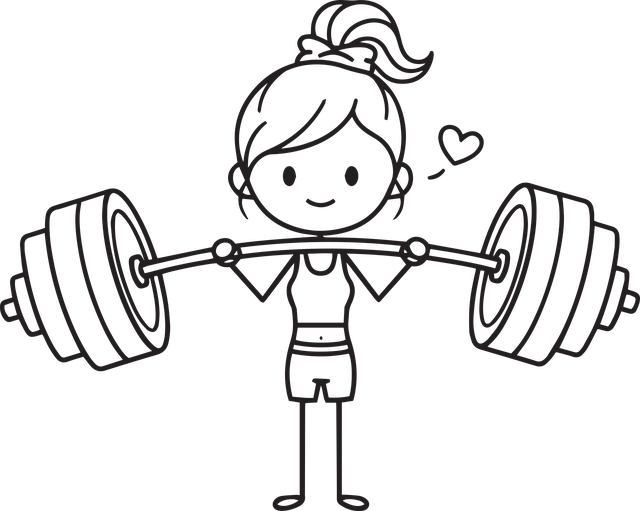

Ich entwickle mit Leidenschaft Software, die Kund:innen zu Gute kommt und Prozesse vereinfacht.
Mein Berufsleben ist eine Mischung aus Logik
,
Kreativität und jeder Menge Code
.
Ich arbeite strukturiert, präzise und lösungsorientiert, bin engagiert und arbeite gerne im Team.
In meiner Freizeit sitze ich oft vor einem Buch
.
Mit Ausdauer und Freude spiele ich jede Woche Karten
mit Familie und Freunden.
Ausserdem halte mich fit mit Radfahren
und Krafttraining
